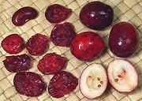
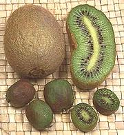

SAFARI
Users
Brazil Nut Family
[Lecythidaceae]
The Brazil Nut family (Lecythidaceae) is a fairly sizeable
family and of great importance in some tropical regions. Described here
are the varieties I have found sufficient detail on, but there are
surely a number of similar varieties producing edible fruit and seeds.
The Brazil Nut Family has its own
page.
Heather Family
 [Ericaceae]
The Heather Family (Ericaceae) is a very large family,
containing over 4000 species in 126 genera. It includes a great many
flowering plants used as decoratives and landscaping, but also a few
culinary species, most notably blueberries and cranberries.
The Heather Family has its own
page.
Ebony Family
[Ebenaceae]
Ebony is a modest size family of tropical and subtropical trees
(Ebenaceae) best known for hard wood of dark color, ranging all the way
to jet black. The family includes two genera, Euclea, noted for
hard dark wood, and Diospyros, noted for hard dark wood, but
also for a few species producing edible fruit, most notably persimmons.
The Ebony Family has its own page.
Sapote Family
[Sapotaceae]
Sapotes have long been important trees in the tropical Americas, Africa
and Southeast Asia. They have provided sap of industrial importance,
fruit, and wood - hard to extremely hard wood. They range from small to
rather large trees. The Sapote Family
has its own page.
Kiwi / Chinese Gooseberry Family

[Actinidiaceae]
This modest size family of 3 genera and some 360 species of vines shrubs
and trees native to temperate and subtropical environments has only a
few members of culinary and commercial interest, the Kiwi Fruit. There
are also varieties of interest to cats.
The Kiwi Family
has its own page.
Camellia / Tea Family
[Theaceae]
Camellias are well known as decorative flowering shrubs and trees, but
they are also of tremendous economic value, particularly to China and
India, for both tea and cooking oil. Worldwide, tea is the second most
consumed beverage, second only to water.
The Camellia Family has its own page.